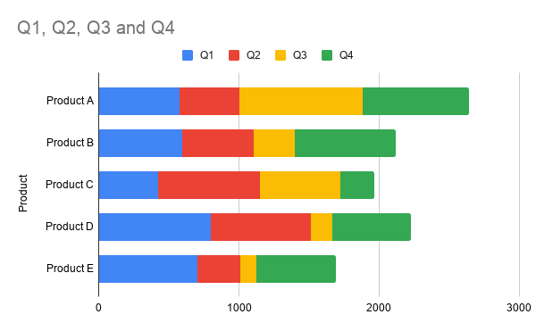
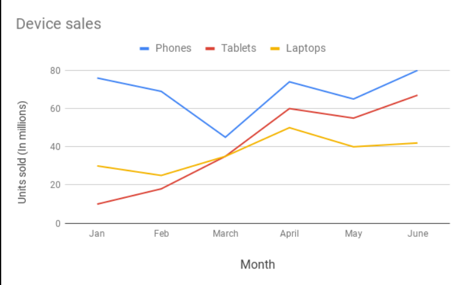
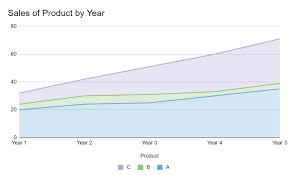
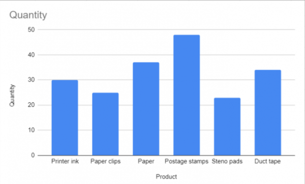
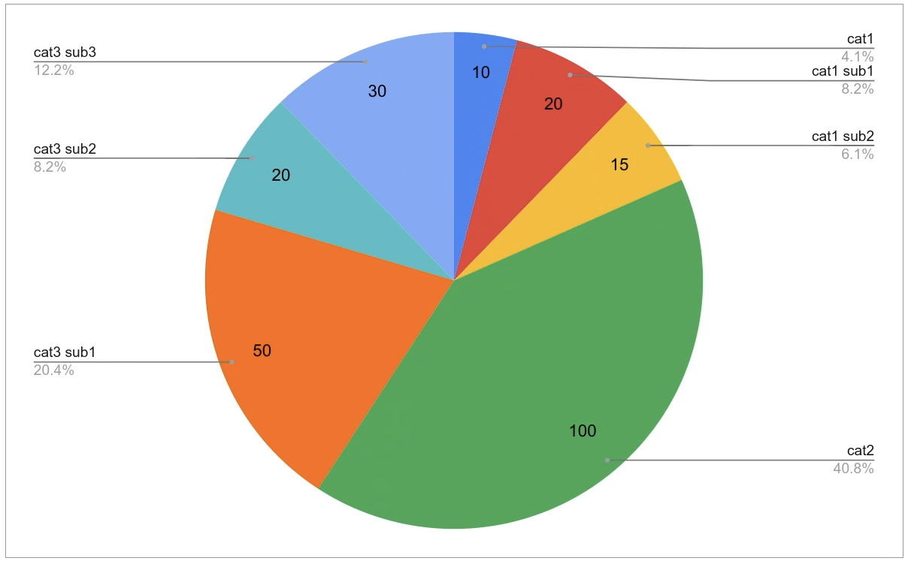
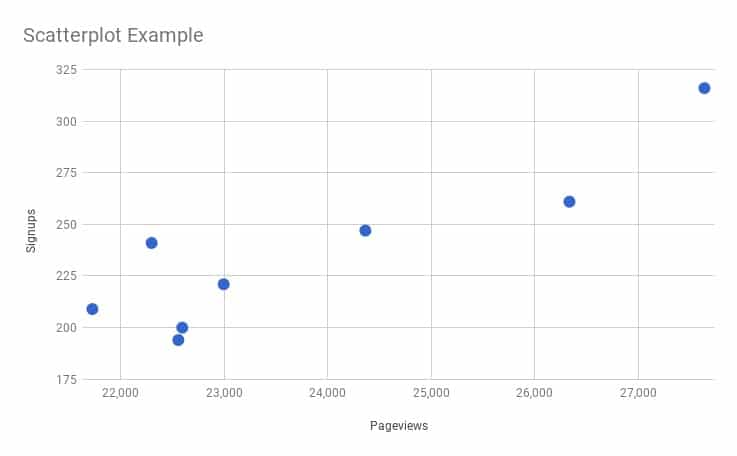

Data Visualization Using Charts
Explanation of the Importance of Data Visualization
Data visualization is crucial for understanding complex datasets because it simplifies data, identifies patterns and trends, facilitates decision-making, and enhances communication.
Demonstration of Various Types of Charts and Their Applications
Let's explore different types of charts and their applications:
-
1. Bar Chart:
Ideal for comparing categorical data or showing changes over time.  2. Line Chart:
Used to display trends and changes over continuous intervals, such as time. -
3. Area Chart:
Similar to a line chart, but the area below the line is filled, making it suitable for showing cumulative data.  -
4. Column Chart:
Similar to a bar chart but with vertical bars, commonly used to compare discrete categories.  -
5. Pie Chart:
Useful for showing parts of a whole, such as percentages or proportions.  -
6. Scatter Plot:
Depicts the relationship between two variables, ideal for identifying correlations or clusters. 
Analysis of the Selected Dataset Using Charts
Using the selected dataset, we'll create each type of chart to analyze and visualize different aspects of the data.
Embed or Link the Excel Sheet for Reference
You can view the dataset used for analysis in the Google Sheets document:
Click here to view the Google Sheets document